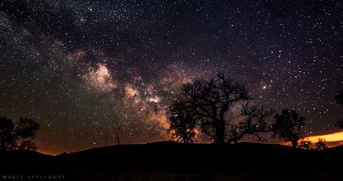
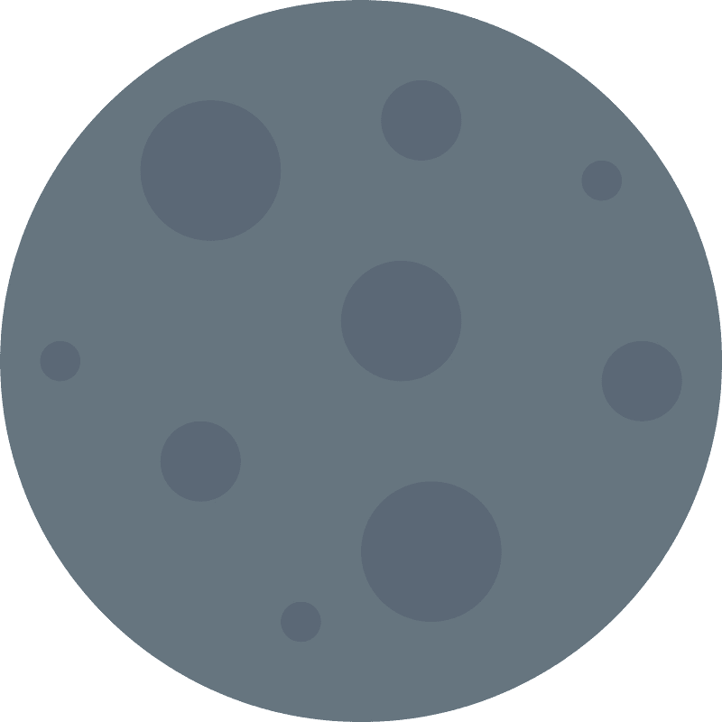
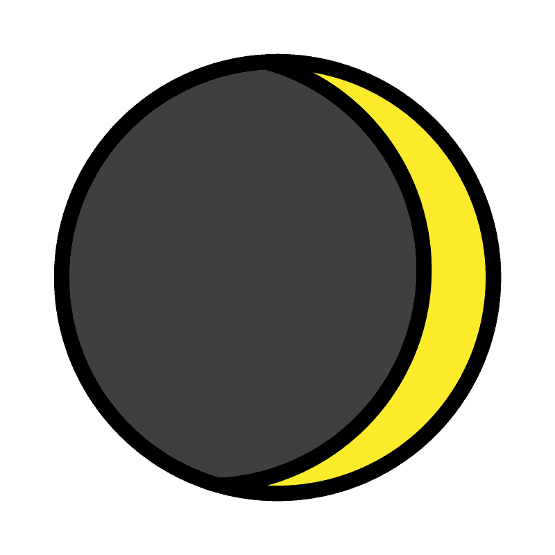
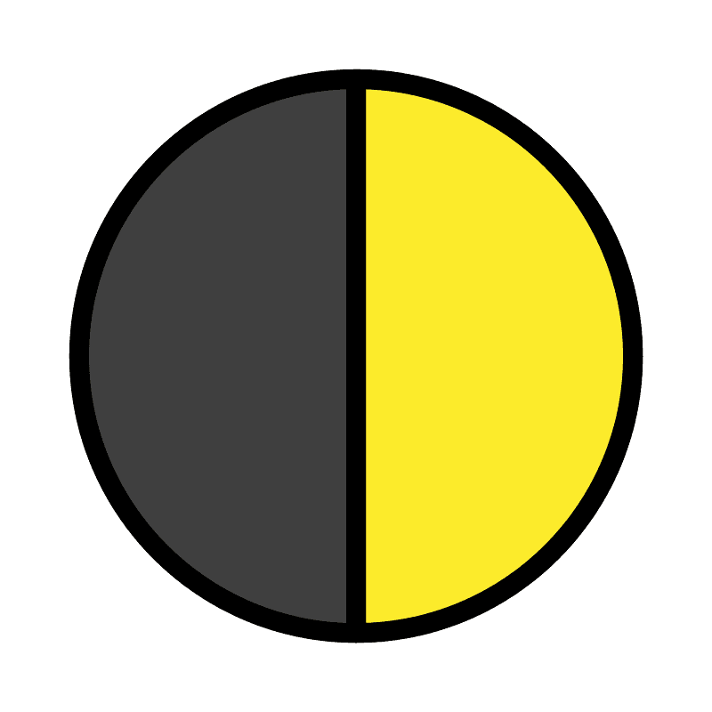
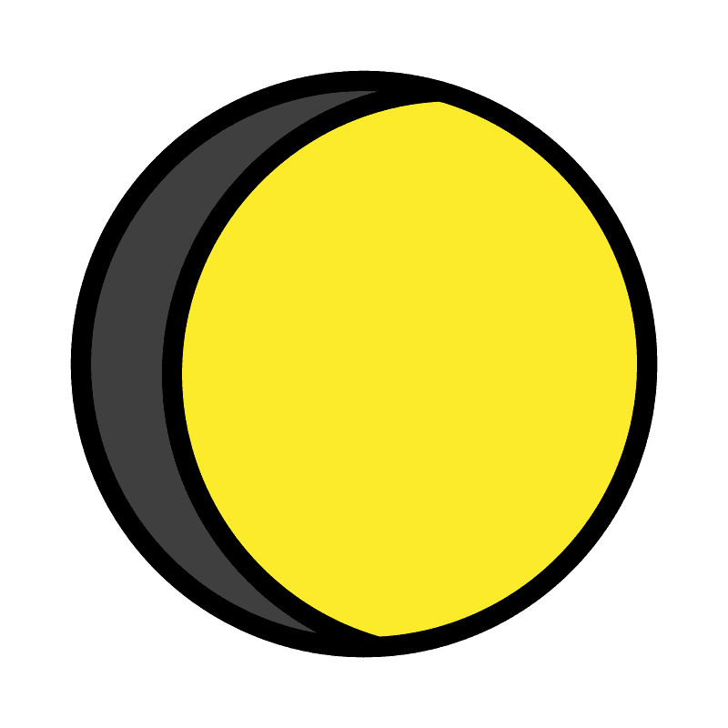
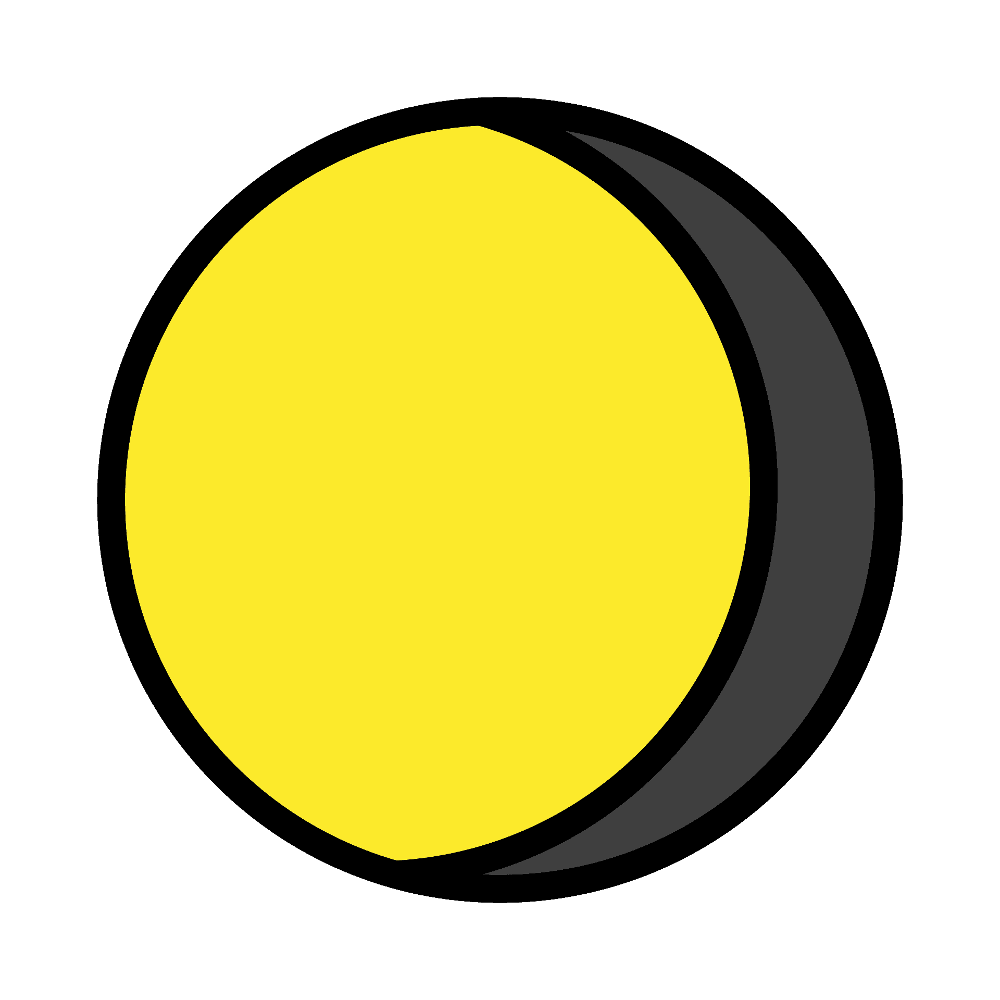
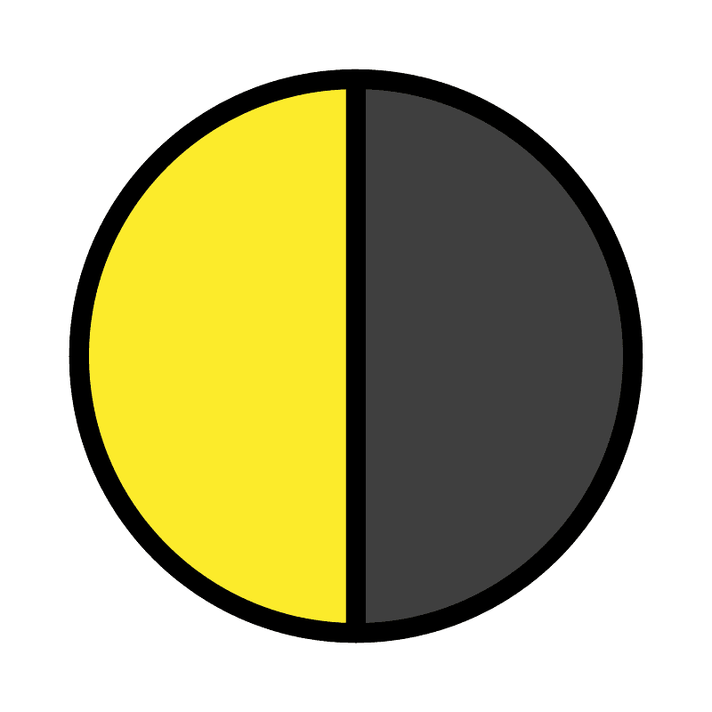
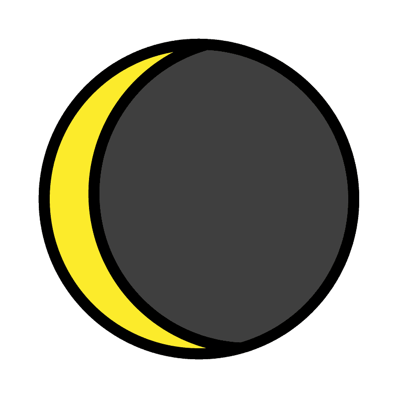

| 1. Noche | ||||||||
| 2. Fases de la luna | ||||||||
| 2. Eventos astronómicos | ||||||||
Noche |
|||
|---|---|---|---|
| La noche es el tiempo en que falta la claridad del día. Es el periodo que va del ocaso (cuando el sol atraviesa el plano del horizonte y pasa a ubicarse en un hemisferio no visible) al amanecer (cuando el sol atraviesa el plano del horizonte y pasa al hemisferio visible) del día siguiente. La duración de la noche (y del día) varía a lo largo del año. La noche más corta ocurre con el solsticio de verano (cuando el sol alcanza su máxima posición meridional o boreal), mientras que la más breve tiene lugar con el solsticio de invierno1. |
|||
|  | |||
| Volver arriba | |||
Ciclos de la luna |
||
|---|---|---|
| FASES LUNARES DEL HEMISFERIO NORTE | ||||||||
|---|---|---|---|---|---|---|---|---|
| SEMANA 1 | SEMANA 2 | SEMANA 3 | SEMANA 4 | SEMANA 5 | ||||
| NUEVA | 1/4 | LLENA | 3/4 | NUEVA | ||||
|  |  |  |  |  |  |  |  | |
| Creciente ------------> | Menguante ------------> | |||||||
| FASES LUNARES DEL HEMISFERIO SUR | ||||||||
| SEMANA 1 | SEMANA 2 | SEMANA 3 | SEMANA 4 | SEMANA 5 | ||||
| NUEVA | 1/4 | LLENA | 3/4 | NUEVA | ||||
| Creciente ------------> | Menguante ------------> | |||||||
| Para más información sobre las fases lunares dé click aquí | |||||
| Volver arriba | |||||
Eventos astronómicos |
|||
|---|---|---|---|
| Volver arriba | |||
| 1Definición.DE, 2022. | |||
| Volver arriba | |||